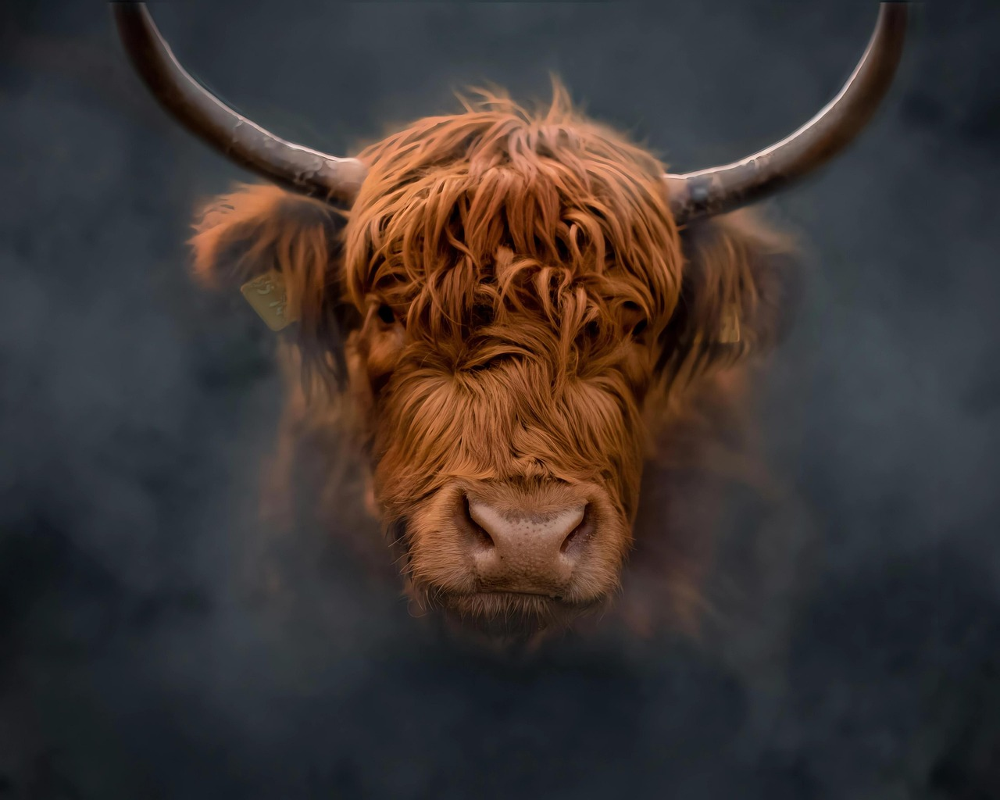
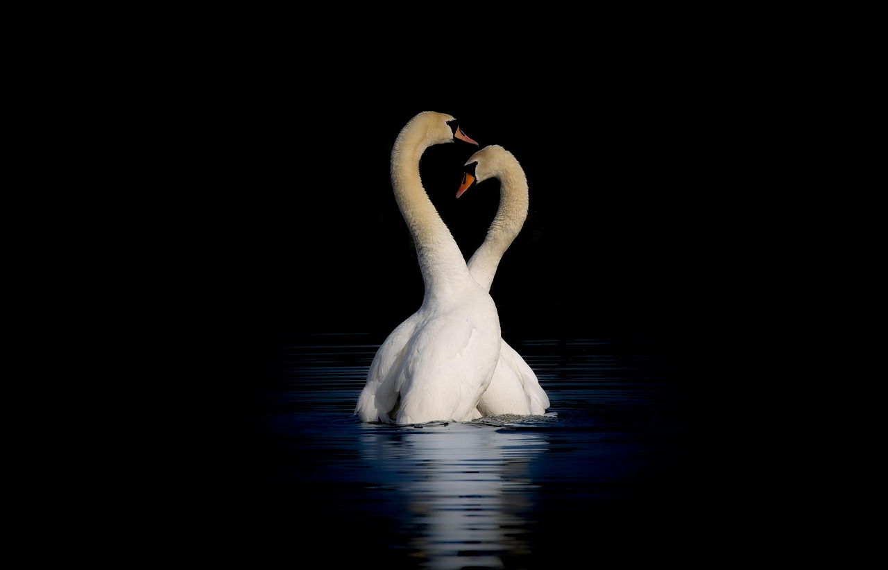

Hello! I am Justin Morvay and this is my webpage. I am 21 years old and I am taking this class to pursue a degree with computer science. I hope to able to work in the IT industry and follow in the footsteps of my Dad.
Since I was a 12 years old, I always wanted to dabble into programming. I started off by trying to understand and modify other people's code, decompiling mods for videogames and making my own modifications for them. My Dad works in IT and has been working with computers since the 1980's. Because of my dad, I want to be able to turn my interest in writing code into a path for my future career.
I mentioned in the previous hobby that my understanding of code came from modifying other people's mods for videogames. I play a lot of a game called Garry's Mod and that game lets you write lua addons, since 2016 I have done a lot with modifying other's work for personal use and even learning my own code and creating my own addons to release publically. I have also dabbled into modding for the goldsource engine and C++ as a result, making edits to be used in a mod for an old game called half-life that I wanted to make back in 2022. I do not believe my coding experience is currently enough to be used professionally but it is still something that I find fun and enjoyable.
I have been a student at McHenry County College for 3 years.
 